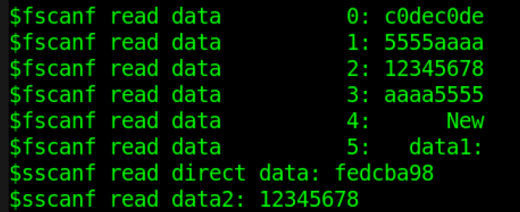
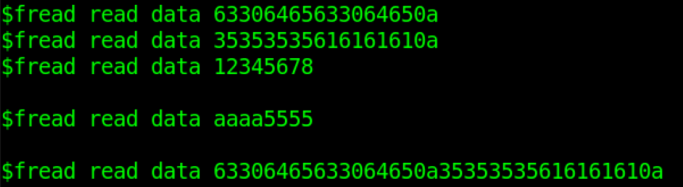

Verilog 提供了很多可以对文件进行操作的系统任务。经常使用的系统任务主要包括：
- 文件开、闭：$fopen, $fclose, $ferror
- 文件写入：$fdisplay, $fwrite, $fstrobe, $fmonitor
- 字符串写入：$sformat, $swrite
- 文件读取：$fgetc, $fgets, $fscanf, $fread
- 文件定位：$fseek, $ftell, $feof, $frewind
- 存储器加载：$readmemh, $readmemb
使用文件操作任务（尤其注意 $sforamt, $gets, $sscanf 等）对文件进行操作时，需要根据文件性质和变量内容确定使用哪一种系统任务，并保证参数及读写变量类型与文件内容的一致性，不要将字符串类型和多进制类型相混淆。
文件打开/关闭
| 系统任务 | 调用格式 | 任务描述 |
|---|---|---|
| 文件打开 | fd = $fopen("fname", mode) ; | fname 为打开文件的名字 fd 为返回的 32bit 文件描述符 --- 正确打开时，fd 为非零值 --- 打开出错时，fd为零值 mode 用于指定文件打开的方式 |
| 文件关闭 | $fclose(fd) ; | 关闭 fd 描述的对应文件 |
| 文件错误 | err = $ferror(fd, str) ; | 正常打开文件时： --- err 与 str 均为零值， 打开文件出错时： --- err 返回非零值表示错误 --- str 返回非零值存储错误类型 --- 官方建议 str 长度为 640bit 位宽 |
举例代码如下：
实例
integer fd1, fd2 ;
integer err1, err2 ;
reg [320:0] str1, str2 ; //错误类型的变量也可以为可支持的 string 类型
initial begin
//existing file
fd1 = $fopen("./DATA_RD.HEX", "r"); //打开存在的文件
err1 = $ferror(fd1, str1);
$display("File1 descriptor is: %h.", fd1 );//非零值
$display("Error1 number is: %h.", err1 ); //0
$display("Error2 info is: %s.", str1 ); //0
$fclose(fd1);
//not existing file
fd2 = $fopen("../../FILE_NOEXIST.HEX", "r");//打开的文件不存在
err2 = $ferror(fd2, str2);
$display("File2 descriptor is: %h.", fd2 ); //0
$display("Error2 number is: %h.", err2 ); //非零值
$display("Error2 info is: %s.", str2 ); //非零值
$fclose(fd2);
end

文件打开方式 mode 类型及其描述如下：
| r | 只读打开一个文本文件，只允许读数据。 |
|---|---|
| w | 只写打开一个文本文件，只允许写数据。如果文件存在，则原文件内容会被删除。如果文件不存在，则创建新文件。 |
| a | 追加打开一个文本文件，并在文件末尾写数据。如果文件如果文件不存在，则创建新文件。 |
| rb | 只读打开一个二进制文件，只允许读数据。 |
| wb | 只写打开或建立一个二进制文件，只允许写数据。 |
| ab | 追加打开一个二进制文件，并在文件末尾写数据。 |
| r+ | 读写打开一个文本文件，允许读和写 |
| w+ | 读写打开或建立一个文本文件，允许读写。如果文件存在，则原文件内容会被删除。如果文件不存在，则创建新文件。 |
| a+ | 读写打开一个文本文件，允许读和写。如果文件不存在，则创建新文件。读取文件会从文件起始地址的开始，写入只能是追加模式。 |
| rb+ | 读写打开一个二进制文本文件，功能与 "r+" 类似。 |
| wb+ | 读写打开或建立一个二进制文本文件，功能与 "w+" 类似。 |
| ab+ | 读写打开一个二进制文本文件，功能与 "a+" 类似。 |
文件写入
写文件的系统任务主要包括：$fdisplay, $fwrite, $fstrobe, $fmonitor，以及它们对应的自带格式的系统任务 $fdisplayb, $fdisplayh, $fdisplayo 等。
| 调用格式 | 任务描述 |
|---|---|
| $fdisplay(fd, arguments) ; | 按顺序或条件写文件，自动换行 |
| $fwrite(fd, arguments) ; | 按顺序或条件写文件，不自动换行 |
| $fstrobe(fd, arguments) ; | 语句执行完毕后选通写文件 |
| $fmonitor(fd, arguments) ; | 只要数据有变化就写文件 |
相对于标准显示任务 $display, $write, $strobe, $monitor，写文件系统任务除了用法格式上需要多指定文件描述符 fd，其余打印条件、时刻特性等均与其对应的显示任务保持一致。
利用追加写的方式，对文件进行写操作的举例如下：
实例
integer fd ;
integer err, str ;
initial begin
fd = $fopen("./DATA_RD.HEX", "a+"); //末尾追加的方式打开
err = $ferror(fd, str);
if (!err) begin
$fdisplay(fd, "New data1: %h", fd) ;
$fdisplay(fd, "New data2: %h", str) ;
$fdisplay(fd, "New data3: %h", err) ;
//$write(fd, "New data3: %h", err) ; //最后一行不换行打印
end
$fclose(fd);
end
打开文件 DATA_RD.HEX，则可以看到文件末端新增了 3 行数据。

字符串写入
Verilog 还提供了往字符串里写数据的系统任务 $swrite 和 $sformat。
| 调用格式 | 任务描述 |
|---|---|
| $swrite(reg, list_of_arguments) ; | 按顺序或条件写字符串到变量 reg 中 |
| len = $sformat(reg, format_str, arguments) ; | 按格式 format_str 写字符串到变量 reg 中 格式与 $display 指定格式时一致 不建议省略第二个参数 format_str 可返回字符串长度 len |
$sformat 第二个参数 format 为字符串类型，一般建议不要省略。该参数指定了输入变量的类型，指定类型时也可以包含其他字符串信息，类型种类及用法可参考显示函数 $display。该参数也可以为寄存器类型，但要求存储的数据为正常的字符串数据。
写字符串代码举例如下：
实例
reg [299:0] str_swrite, str_sformat;
reg [63:0] str_buf ;
integer len, age ;
initial begin
#20 ;
str_buf = "runoob!" ;
age = 9 ;
//$swrite 指定格式写包含变量的字符串
$swrite(str_swrite, "%s age is %d", str_buf, age) ;
$display("%s", str_swrite);
//$swrite 直接写不含有变量的字符串
$swrite(str_swrite, "years ", "old.") ;
$display("%s", str_swrite);
//$swrite 不指定格式写包含变量的字符串，不建议
$swrite(str_swrite, age) ;
$display("$swrite err test: %d", str_swrite);
$display();
//$sformat 指定格式写包含变量的字符串
$sformat(str_sformat, "I have learnt in %s", str_buf) ;
$display("%s", str_sformat);
//$sformat 直接写不含有变量的字符串，并获取字符串长度
len = $sformat(str_sformat, "for 4 years!") ;
$display("%s", str_sformat);
$display("$sformat len: %d", len);
//$sformat 直接一次写多个不含有变量的字符串，不建议
$sformat(str_sformat, "for", "4", "years!") ;
$display("$sformat err test: %s", str_sformat);
end
忽略打印信息的空格，调试信息输出如下：

由此可知，$sformat 与 $swrite 用法可以一致，例如 $sformat 可采用指定格式的写字符串，或只写一次不含变量的字符串。此时 $sformat 相当于在第二个参数中未指定变量类型，所以第三个参数应该忽略不写。
$swrite 还可以一次写多个不包含变量的字符串，而 $sformat 不允许如此调用。
也建议，使用 $swrite 写包含变量的字符串时要指定变量类型，否则结果可能不可预测。
文件读取
| 系统任务 | 调用格式及说明 | |
|---|---|---|
| 按字符读文件 | c = $fgetc( fd ) ; | |
| 按字符格式将 fd 数据输出给变量 c，c 位宽最少为 8 读取错误时 c 值为 EOF(-1)，可以用 $ferror 检查错误类型 | ||
| 按字符写缓冲区 | code = $ungetc(c, fd ) ; | |
| 向文件 fd 缓冲区写字符 c c 值在下次调用 $fgetc 时返回，文件 fd 自身内容不会发生变化 正常写缓冲时返回值 code 为 0，发生错误时返回值 code 为 EOF | ||
| 按行读文件 | code = $fgets(str, fd) | |
| 按字符连续读，直至变量 str 被填满，或一行内容读取完毕，或文件结束 正常读取时返回值 code 为读取行数（次数），发生错误时 code 为 0 | ||
| 按格式读文件 | code = $fscanf(fd, format, args) ; | |
| 按格式 format 将文件 fd 中的数据读取到变量 args 中 format 可参考 $display 指定格式说明 读取一次的停止条件为空格或换行 读取发生错误时返回值 code 为 0 | ||
| 按格式读字符串 | code = $sscanf(str, format, args) ; | |
| 按格式 format 将字符串型变量 str 读取到变量 args 中 调用格式方法和 $fscanf 一致 | ||
| 按二进制读文件 | code = $fread(store, fd, start, count) ; | |
| 按二进制数据流格式将数据从文件 fd 读取到数组或寄存器变量 store 中 start 为文件起始地址，count 为读取长度 若 start/count 未指定，数据会全部填充至变量 store 中 若 store 为寄存器类型，则 start/count 参数无效，store 变量填充满一次数据后便会停止读取 |
c0dec0de 5555aaaa 12345678 aaaa5555 New data1: 80000003 New data2: 00000000 New data3: 00000000
$fgetc，$ungetc 调用举例
实例
integer i ;
reg [31:0] char_buf ;
initial begin
#30 ;
fd = $fopen("DATA_RD.HEX", "r");
$write("Read char: ");
err = $ferror(fd, str);
if (!err) begin
for (i=0; i<13; i++) begin
char_buf[7:0] = $fgetc(fd) ; //按单个字符读取
$write("%c", char_buf[7:0]) ; //不换行逐次打印单个字符
end
$write(".\n") ;
end
$ungetc("1", fd) ; //连续写3次文件缓冲区
$ungetc("2", fd) ;
$ungetc("3", fd) ;
char_buf[7:0] = $fgetc(fd) ; //read 3
char_buf[15:8] = $fgetc(fd) ; //read 2
char_buf[23:16] = $fgetc(fd) ; //read 1，read buffer end
char_buf[31:24] = $fgetc(fd) ; //read a
$display("Read char after $ungetc: %s", char_buf);
$fclose(fd);
end
仿真结果如下。
由图可知，$fgetc 读取的 13 个字符正确，读取字符包括了换行符。
$ungetc 向文件缓冲区写字符数据后，再用 $fgetc 可读取文件缓冲区的字符数据。读写遵循先写后出（FILO, First in Last out）原则，相当于压栈。字符数据先写"123"时，读出数据为"321"。
文件缓冲区读取完毕后，再进行字符数据读取时，读出的数据依然紧随上一次文件读取的位置，即 log 中"a123"中的字符"a"。
此过程中，文件 DATA_RD.HEX 内容一直没有改变。

$fgets 调用举例
实例
integer code ;
reg [99:0] line_buf [9:0] ;
initial begin
#31 ;
fd = $fopen("DATA_RD.HEX", "r");
err = $ferror(fd, str);
if (!err) begin
for (i=0; i<6; i++) begin //按字符串格式逐行读取
code = $fgets(line_buf[i], fd) ; //末尾含"\n"，将打印2行
$display("Get line data%d: %s", i, line_buf[i]) ;
end
end
//十六进制显示，将显示对应的 ASCIII 码字
$display("Show hex line data%d: %h", 2, line_buf[2]) ;
$display("Show hex line data%d: %h", 4, line_buf[4]) ;
$fclose(fd) ;
end
仿真结果如下。
前 4 行数据按照字符串类型读取和显示，结果正常。
读取文件第 5 行数据时，由于变量 line_buf 位宽 100 的限制，文件内容"New data1: 80000003 "需要分 2 次才能完成读取。
因为每一行末尾包含换行符"\n"，所以使用 $display 函数打印时，会多出一行空行。
按照字符串型读取、并对数据进行十六进制显示时，并不能直观的显示出文件对应的数据内容。例如第二行内容并没有显示"12345678,"而是显示其对应的 ASCII 码。所以 $fgets 任务读取时是按照字符串类型读取的，这里需要注意。

$fscanf，$sscanf 调用举例
实例
reg [31:0] data_buf [9:0] ;
reg [63:0] string_buf [9:0] ;
reg [31:0] data_get ;
reg [63:0] data_test ;
initial begin
#32 ;
fd = $fopen("DATA_RD.HEX", "r");
err = $ferror(fd, str);
if (!err) begin
for (i=0; i<4; i++) begin
//前4行数据按照十六进制读取和显示
code = $fscanf(fd, "%h", data_buf[i]);
$display("$fscanf read data%d: %h", i, data_buf[i]) ;
end
for (i=4; i<6; i++) begin
//后2行数据按照字符串类型读取和显示
code = $fscanf(fd, "%s", string_buf[i]);
$display("$fscanf read data%d: %s", i, string_buf[i]) ;
end
end
//(1) $sscanf 源变量 data_test 为字符串类型
data_test = "fedcba98" ;
code = $sscanf(data_test, "%h", data_get);
$display("$sscanf read data0: %h", data_get) ;
//(2) $sscanf: 将源变量 data_test 先转为字符串变量
code = $sformat(data_test, "%h", data_buf[2]);
code = $sscanf(data_test, "%h", data_get);
//直接输入十六进制变量是不建议的
//code = $sscanf(data_buf[2], "%h", data_get);
$display("$sscanf read data0: %h", data_get) ;
$fclose(fd) ;
end
仿真结果如下。
利用 $fscanf 对文件前 4 行内容按照十六进制读取和显示，后 2 行内容按照字符串型读取和显示，均正常。
利用 $sscanf 读取源寄存器内容然后搬移到目的寄存器时，源寄存器中的内容应该为字符串型数据。
例如，利用 $sscanf 将十六进制的数据 data_buf[2] 搬移到寄存器变量 data_get 时，可以先利用写字符串任务 $sformat 将源变量 data_buf[2] 的内容转为字符串型，存放在变量 data_test 中。然后再利用 $sscanf 按照十六进制将 data_test 中的内容搬移到变量 data_get 中。此时按照十六进制格式打印变量 data_get 会显示正常。
如果直接利用 $sscanf 将十六进制格式的数据 data_buf[2] 直接搬移到变量 data_get 中，则 data_get 中的内容将会是异常的。
偷偷告诉你，寄存器之间是可以直接赋值的！！！

$fread 调用举例
实例
reg [71:0] bin_buf [3:0] ; //每行有8个字型数据和1个换行符
reg [143:0] bin_reg ;
initial begin
#40 ;
fd = $fopen("DATA_RD.HEX", "r");
err = $ferror(fd, str);
if (!err) begin
code = $fread(bin_buf, fd, 0, 4); //数组型读取，读取4次
$display("$fread read data %h", bin_buf[0]) ;//十六进制显示
$display("$fread read data %h", bin_buf[1]) ;
$display("$fread read data %s", bin_buf[2]) ;//字符串显示
$display("$fread read data %s", bin_buf[3]) ;
end
fd = $fopen("DATA_RD.HEX", "r");
code = $fread(bin_reg, fd); //单个寄存器读取
$display("$fread read data %h", bin_reg) ;
$fclose(fd) ;
end
仿真结果如下。
$fread 按二进制读取文件时 ，起始地址和读取长度都是设置数组型变量的参数。
如果存储数据的变量类型是非数组的 reg 型，则只会进行一次读取，直至 reg 型变量被填充完毕。

文件定位
| 系统任务 | 调用格式 | 任务描述 |
|---|---|---|
| 获取文件位置 | pos = $ftell( fd ) ; | 返回文件当前位置距离文件首部的偏移量，初始地址为 0 偏移量按照字节为一单位（8bits） 配合 $fseek 使用 |
| 重定位 | code = $fseek(fd, offset, type) ; | 设置文件下一个输入或输出的位置 offset 为设置的偏移量 type 为偏移量的操作类型 --- 0: 设置位置到偏移地址 --- 1: 设置位置到当前位置加偏移量 --- 2: 设置位置到文件尾加偏移量，经常使用负数来表示文件尾向前的偏移量 |
| 无偏移重定位 | code = $rewind( fd ) ; | 等价于 $fseek( fd, 0, 0) ; |
| 判断文件尾部 | code = $feof(fd) ; | 判读是否到文件尾部 检测到文件尾部时返回值为 1，否则为 0 |
文件 DATA_RD.HEX 内容可表示如下。
换行符"\n"为结束符，则文件大小为：4x9 + 3x20 = 96 byte。

文件定位测试代码如下：
实例
reg [31:0] data4 ; //寄存器变量长度为 4bytes
reg [199:0] str_long ;
integer pos ;
initial begin
#40 ;
fd = $fopen("DATA_RD.HEX", "r");
err = $ferror(fd, str);
if (!err) begin
//first read
code = $fscanf(fd, "%h", data4);//从0位置开始读
pos = $ftell(fd); //读8byte后位置为8,坐标为(0,8)
$display("Position after read: %d", pos) ;
$display("1st read data: %h", data4) ;
//type = 0
code = $fseek(fd, 4, 0) ; //从位置4、坐标(0,4)开始读
code = $fscanf(fd, "%h", data4); //读到换行符停止
pos = $ftell(fd); //读4byte后位置为8,坐标为(0,8)
$display("type 0: current position: %d", pos) ;
$display("type 0: read data: %h", data4) ;
//type = 1
code = $fseek(fd, 4, 1) ; //从位置4+9=12、坐标(1,3)据开始读
code = $fscanf(fd, "%h", data4); //读到换行符停止
pos = $ftell(fd); //读5byte后位置为17，坐标为(1,8)
$display("type 1: current position: %d", pos) ;
$display("type 1: read data: %h", data4) ;
//type = 2
code = $fseek(fd, -(96-31), 2) ; //从位置31、坐标(3,4)开始读
code = $fscanf(fd, "%h", data4);
pos = $ftell(fd); //读4byte后位置为35，坐标为(3,8)
$display("type 2: current position: %d", pos) ;
$display("type 2: read data: %h", data4) ;
//rewind read
code = $rewind(fd) ;//重新将文件指针的位置指向文件首部
pos = $ftell(fd); //此时位置为 0
$display("Position after $rewind: %d", pos) ;
//read all content of file
while (!$feof(fd)) begin
code = $fgets(str_long, fd);
$write("Read : %s", str_long) ;
end
$fclose(fd) ;
end
end
仿真结果如下。
由图可知 log 末尾多打了一行数据，这是因为文件 DATA_RD.TXT 末尾还有一行空白行（换行操作之后的结果），系统任务 $feof 并不认为该空白行为文件尾部，所以返回值仍然为 0。但实际该行并没有数据，所以读取的数据具有不可控制性。
为消除文件最后一行数据中换行符的影响，可将"文件写入"例子中最后一个写文件系统任务 $fdisplay 替换为 $write 。
其余 log 结合代码注释可知仿真正确，这里不再做统一解释。

加载存储器
| 系统任务 | 调用格式及说明 | |
|---|---|---|
| 加载十六进制文件 | $readmemh("fname", mem, start_addr, finish_addr) | |
| fname 为数据文件名字 mem 为数组型/存储器型变量 start_addr、finish_addr 分别为起始地址和终止地址 start_addr、finish_addr 可以省略，此时加载数据的停止条件为存储器变量 mem 被填充完毕，或文件读取完毕 文件内容只应该有空白符（或换行、空格符）、二进制或十六进制数据 注释用"//"进行标注，数据间建议用换行符区分 | ||
| 加载二进制文件 | $readmemb("fname", mem, start_addr, finish_addr) | |
| 用法格式同 $readmemb |
文件 DATA_WITHNOTE.HEX 内容如下，将此文件的内容加载到存储器变量中。

举例代码如下：
实例
reg [31:0] mem_load [3:0] ;
initial begin
#50 ;
$readmemh("./DATA_WITHNOTE.HEX", mem_load);
$display("Read memory1: %h", mem_load[0]) ;
$display("Read memory2: %h", mem_load[1]) ;
$display("Read memory3: %h", mem_load[2]) ;
$display("Read memory4: %h", mem_load[3]) ;
end
仿真结果如下：


点我分享笔记